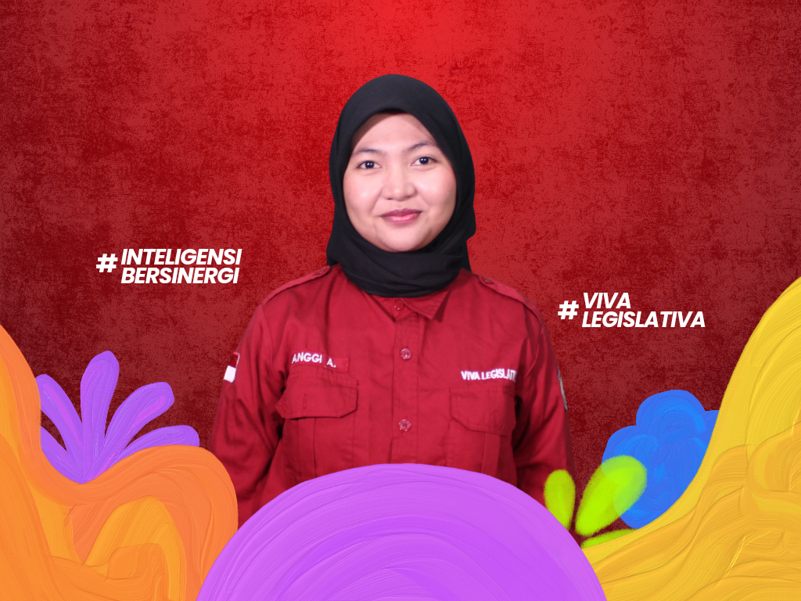
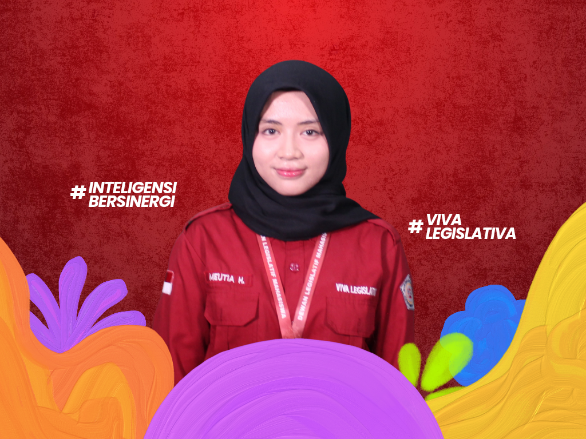
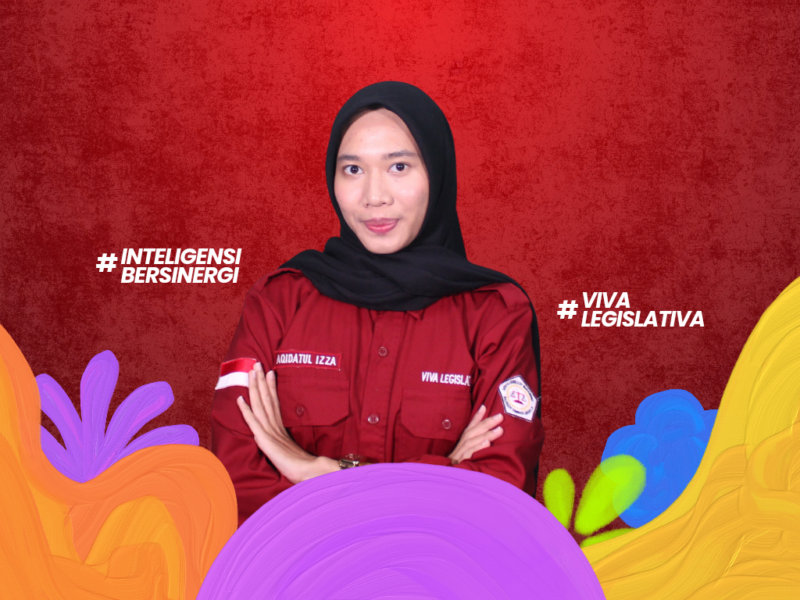
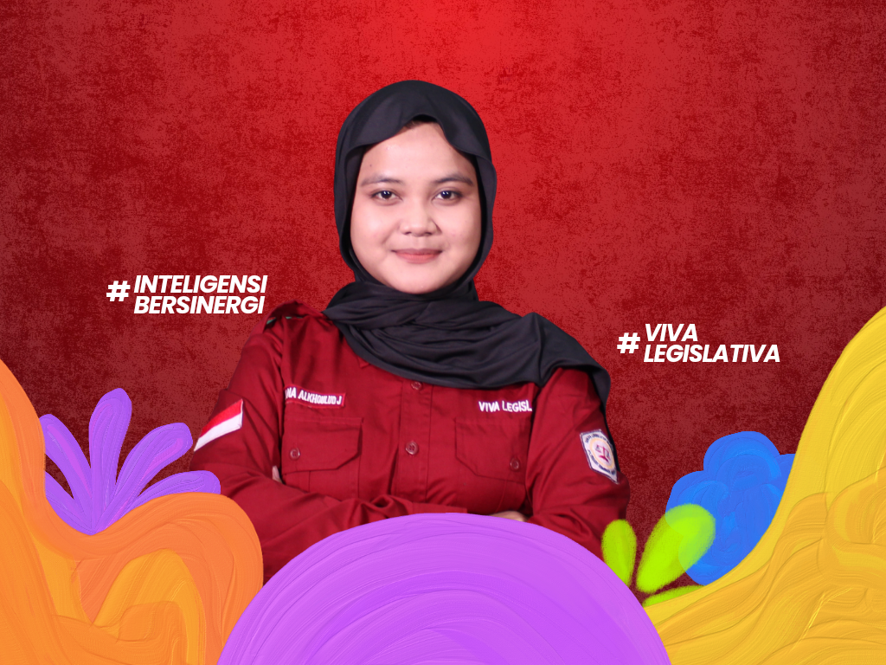

KOORDINATOR KOMISI IV

Mengenal lebih dekat Komisi IV Dewan Legislatif Mahasiswa Poltekkes Kemenkes Jakarta III Periode 2026.
Halo Mahasiswa Poltekkes Kemenkes Jakarta III!
Perkenalkan kami dari Komisi IV Dewan Legislatif Mahasiswa Poltekkes Kemenkes Jakarta III Periode 2026.
Komisi IV memiliki peran dalam menjalankan fungsi legislasi, khususnya dalam mengkaji, menyusun, dan mengawal berbagai produk hukum yang menjadi landasan dalam pelaksanaan organisasi mahasiswa.
Kami percaya bahwa aturan yang baik merupakan dasar bagi terciptanya organisasi yang tertib, demokratis, dan bertanggung jawab. Oleh karena itu, Komisi IV hadir untuk memastikan setiap produk hukum dikaji secara matang dan dapat menjadi landasan yang jelas bagi seluruh lembaga keorganisasian mahasiswa.
Yuk, kenal lebih dekat dengan anggota Komisi IV!





Menyusun dan membentuk kebijakan berupa produk hukum yang dibahas bersama LKM Poltekkes Kemenkes Jakarta III untuk mendapatkan persetujuan bersama, serta mengkaji kebijakan yang diajukan oleh BEM, UKM, dan HMJ untuk menjadi ketetapan baru dalam LKM Poltekkes Kemenkes Jakarta III dengan mempertimbangkan urgensi perubahan dan keselarasan kajian yang diajukan.
Melakukan pengkajian kebijakan yang terdapat di dalam AD/ART dan GBHO Poltekkes Kemenkes Jakarta III.
Memberikan pemahaman terkait produk hukum kepada LKM Poltekkes Kemenkes Jakarta III.
Melakukan pengesahan dan sosialisasi/pemaparan SOP kepada pengurus LKM Poltekkes Kemenkes Jakarta III.

Melakukan pemberian materi Tata Cara Persidangan dan Pelatihan Sidang kepada Formatur LKM Poltekkes Kemenkes Jakarta III.

Melaksanakan sidang pleno pembahasan LPJ BEM dan DLM, LPJ SPIK dan Pembubaran SPIK, LPJ KPR, LK KP, dan Pembubaran Pemira, Pengesahan dan sambutan presiden mahasiswa terpilih, Sambutan ketua umum DLM terpilih, serta pembahasan produk hukum.